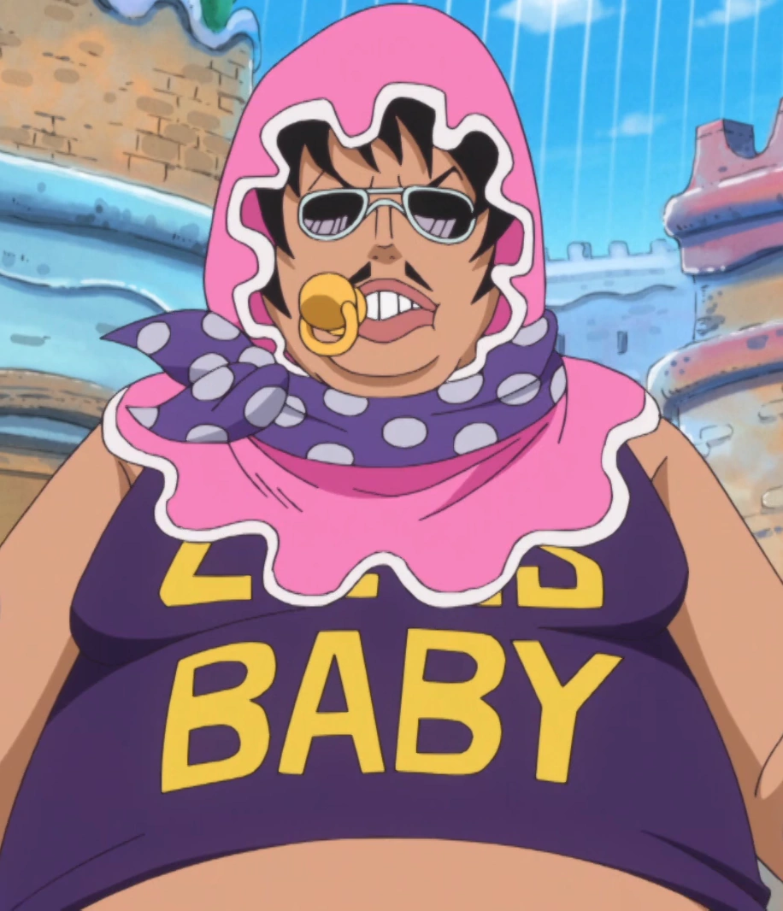
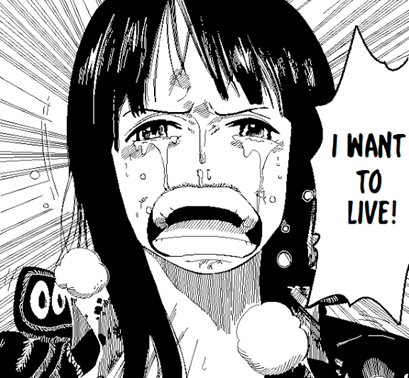

24 years before the first chapter of One Piece, the Pirate King Gol D. Roger was executed by the navy. His famous quote moments before his death sparked the Great Pirate Era:
You want my treaure? You can have it! I left everything I gathered together in one place. Now you just have to find it. -Gol D. Roger
Now, 24 years later, a young boy named Monkey D. Luffy set out to find the legendary treasure left behind dubbed the "One Piece" and claim the title of Pirate King. In order to achieve this dream, Luffy gathered a crew of trusted and unique friends and set out to sea to find the "one place" mentioned by Roger. However on the Strawhat crew's journey, they encounter numerous strong pirates with the same dream and powerful Navy officers who want to put an end to the Great Pirate Era.
Luffy's dream itself is not unique. There are thousands of other pirates who claim to be the next Pirate King, all just as strong, if not stronger than Luffy himself. What makes this story different from others is that although the protagonist is stronger than the rest of his allies, he is still heavily outclassed by the outside world. Current chapter Luffy still would not stand a chance against the Navy with just his crew alone. Most other manga at the time had the protagonist become insanely over-powered but the author Eiichiro Oda brought a twist to this story.
Throughout the manga's impressive chapter count of over 1000, Oda takes the crew on journeys ranging from a simple frozen island to an island with a climate altered by two of the strongest Navy admirals to date, resulting in half of the island being both a frozen wasteland and a sea of magma with unpredictable weather conditions.
It might just sound like a basic story of some pirates fighting over treasure, but the story also incorporates darker concepts that we see in our world today. Be it racism, slavery, human experimentation, human trafficking, murder, you name it, and One Piece has it.
The typical arc of One Piece has the crew arriving at a nation that has been taken over by some despot and after Luffy sees the disgusting nature of the King, he makes it his goal to liberate the citizens. Many of the enemies the crew faces have their own backstories that can be some real tear jerkers such as Senior Pink's. He was an officer of the Donquixote Pirate crew and lied to his wife about his profession being a banker. Their baby died from a fever and soon after, his wife learned of his true nature and was caught in a landslide, resulting in her being placed in a vegetative state. Senior Pink visited her every day just hoping to see her smile once more, but she didn't smile a single time. It was only until he dressed as their late son that she grinned. Long after her death, Senior Pink still dresses as a baby just for her to smile at him in heaven. 
Every single character has a backstory with significance to the story. Oda shows the reader the life story of every person Luffy encounters.
Take a look at Nico Robin of the Strawhat Pirates. She was first introduced as Vice President of Baroque Works working under the Warlord of the Sea Crocodile. As a child, Robin's island Ohara was destroyed by the Navy because scholars were attempting to uncover the secrets of the past that have been hidden for centuries. As the sole survivor, her life purpose has been to finish what those scholars started. Once the Navy found out that Robin was alive, a bounty of 79,000,000 belis was placed on her and she was called the devil's child. As a member of the Strawhats, she was eventually hunted down and gave up her freedom in order to save the crew. She believed that her life didn't mean anything and that she was only a burden because of how she was treated as the devil's child in the past. She didn't want to live anymore. However, the Strawhats didn't believe this. They wanted her to travel the world with them. They wanted her to achieve her dream. They wanted her to live.
I can live? I never dared to wish for something like that, the world had denied me that hope. But now if I'm allowed to say my wish just this once then I... I WANT TO LIVE! Take me with you take me away from here!
-Nico Robin, screaming out to the Strawhat crew whilst in the grasp of the Navy
One Piece is a manga that truly has it all. An intriguing story, dynamic character relations, complex character stories, spectacular fights, and much much more. Although intimidatingly long, it's a manga that everyone should at least try. Simply amazing, 10/10!